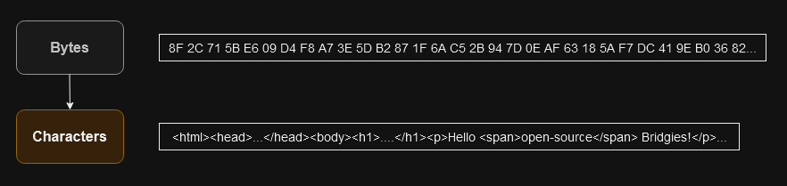
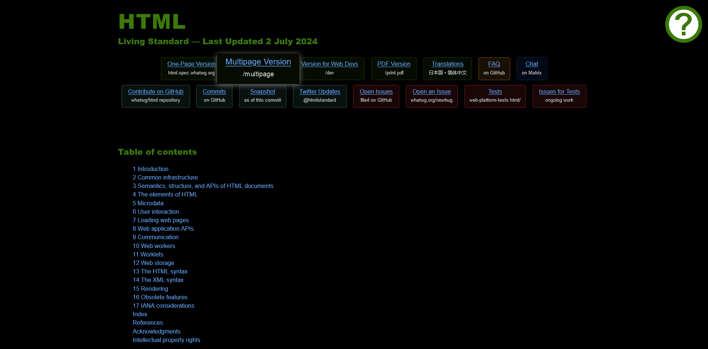
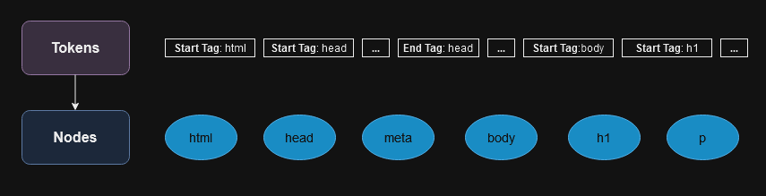
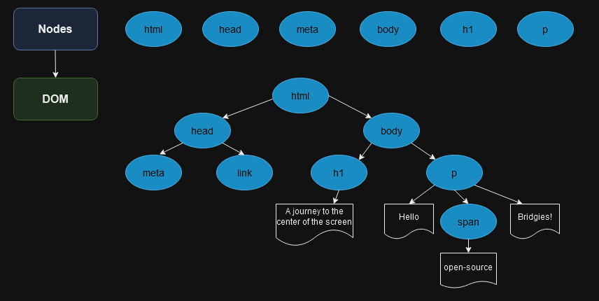
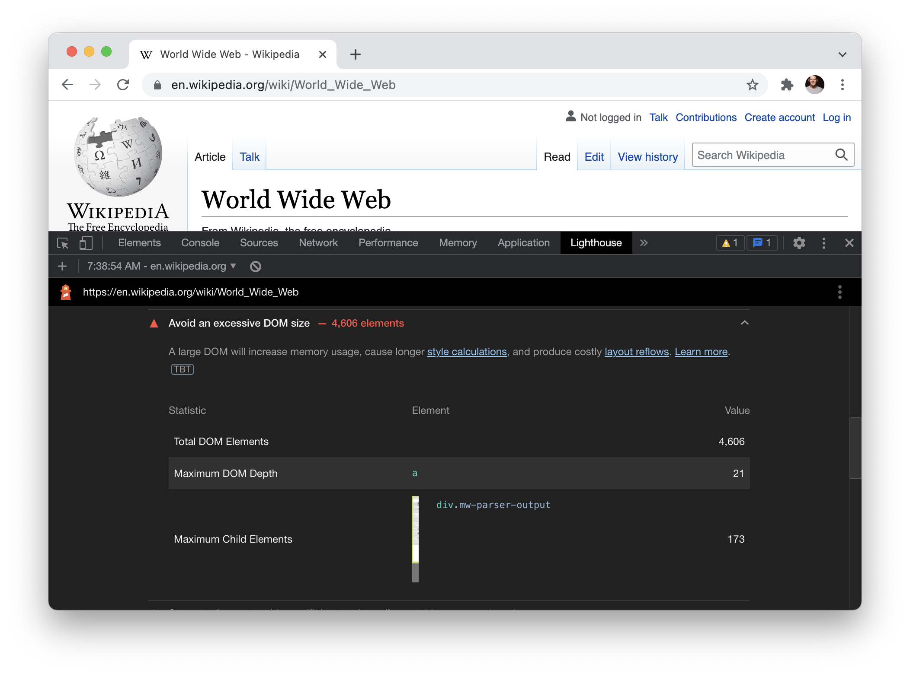
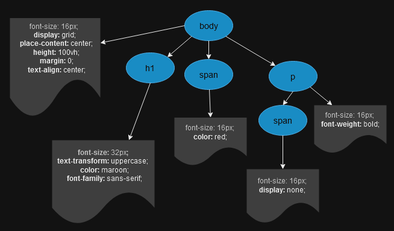
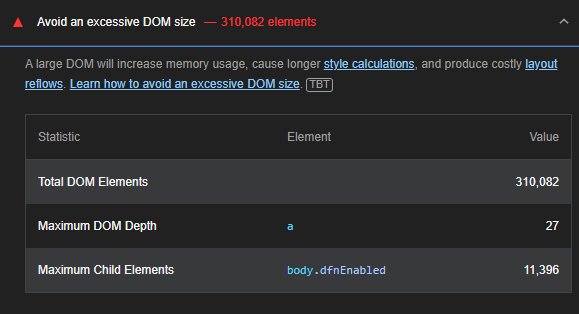

Frontend Performance
Frontend Performance
“From Bytes to Pixels”
The Browser Magic
“From Bytes to Pixels”
The Browser Magic
- Document Object Model (DOM)
- CSS Object Model (CSSOM)
- Render Tree
Step 1: Bytes to characters
Step 2: Characters to tokens

Web Hypertext Application Technology Working Group
Step 3: Lexing
Step 4: DOM construction
Web Hypertext Application Technology Working
According to Lighthouse, a page's DOM size is excessive when it exceeds 1,500 nodes. Lighthouse will begin to throw warnings when a page's DOM exceeds 800 nodes.
DOM Depth
DOM Depth
Lighthouse flags pages with DOM trees that:
- Have more than 1,500 nodes total.
- Have a depth greater than 32 nodes.
- Have a parent node with more than 60 child nodes.
🚫
CSS Object Model (CSSOM)

Render Tree
- Starting at the root of the DOM tree, traverse each node.
- For each node, find the appropriate matching CSSOM rules and apply them - if they're to be hidden (like display: none for our span element inside paragraph) omit them.
- Emit these visible nodes with content
Layout calculation

Huge number of DOM Nodes 👎
Paint
Recap
- Process HTML markup and build the DOM tree.
- Process CSS markup and build the CSSOM tree.
- Combine the DOM and CSSOM into a render tree.
- Run layout on the render tree to compute geometry of each node.
- Paint the individual nodes to the screen.
Thank You
Questions?
Credits
-
Constructing the Object Model
https://web.dev/articles/critical-rendering-path/constructing-the-object-model
-
Render-tree Construction, Layout, and Paint
https://web.dev/articles/critical-rendering-path/render-tree-construction
-
How browsers work
https://developer.mozilla.org/en-US/docs/Web/Performance/How_browsers_work